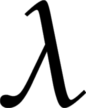

I'm Lauren, a sophomore at UC Berkeley pursuing degrees in Computer Science and Statistics originally from Huntington Beach, California. As an aspiring software engineer, I am particularly interested in artificial intelligence, machine learning, data analytics, and Blockchain technologies. When I'm not studying CS, I enjoy introspecting, going for a long run, binge-watching Korean dramas, jamming out to KPOP, and eating a shameful amount of good food [disclaimer: I don't do all these things simultaneously]. I'm constantly seeking opportunities to improve myself, whether it's in widening my technical skillset or being a kinder individual.

While discovering my passion for technology at Berkeley, I also realized my love for teaching and became heavily involved in Computer Science education on campus. I'm currently a Course Tutor for CS61A, The Structure and Interpretation of Computer Programs, which covers various programming techniques in Python, SQL, and Scheme/Lisp. As a tutor, I instruct two sections per week building upon concepts taught in lecture, hold office hours, and grade projects and exams. In addition, I am a Junior Mentor in the Computer Science Mentors organization, which provides tutoring services for lower division EECS courses.
I currently serve as Director of Student Technology in the Associated Students of University of California, Berkeley, in which I manage several engineering interns and oversee the progress of the ongoing technical projects. At the moment, we are working on building a centralized platform for EECS course resources as well as a comprehensive web application for all CS organizations.
Outside of school, I am a Software Engineering Intern at Konviv, a startup sponsored by Berkeley Skydeck. Konviv is an artificially intelligent and data-driven money management application with a smart "bucketing system" that allows users to allocate money efficiently and spend within their budgets.